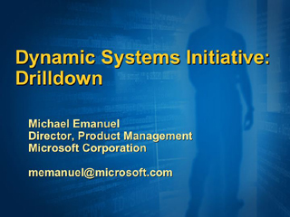
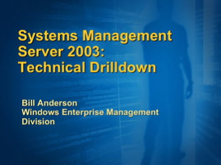
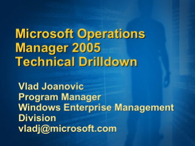

Dynamic Services Initiative: Drilldown

Speaker(s): Michael Emanuel
Dynamic Services Initiative
Speaker(s): Kirill Tatarinov
System Management Server 2003: Technical Drilldown

Speaker(s): Bill Anderson
Microsoft Operations Server 2003: Technical Drilldown, Part 1

Speaker(s): Vlad Joanovic
Microsoft Operations Server 2003: Technical Drilldown, Part 2
Speaker(s): Vlad Joanovic